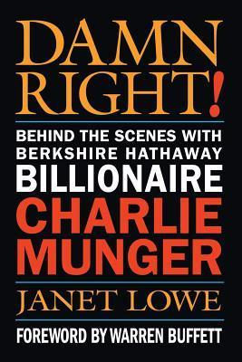

1924年1月1日，查理·芒格生于内布拉斯加州奥马哈。财经记者兼传记作家珍妮特·洛尔（Janet Lowe）用三年时间采访芒格本人、家人、沃伦·巴菲特及三十余位相关人士，完成四十多次访谈后写成《Damn Right!: Behind the Scenes with Berkshire Hathaway Billionaire Charlie Munger》，2000年由John Wiley & Sons出版。洛尔此前写过《巴菲特如是说》（Warren Buffett Speaks），后来又为本杰明·格雷厄姆作传。她在本书中从芒格的大萧条时期童年写起：二战期间，他在加州理工学习气象学，随后到阿拉斯加服役；没有本科学位便进入哈佛法学院，1948年毕业。此后他在洛杉矶执业，又与地产商Otis Booth开发房地产，1965年离开律师业。1959年，芒格经共同朋友介绍在晚宴上结识巴菲特，两人的合作由此开始。
芒格经营的Wheeler, Munger & Co.在1962年至1975年间年均回报约19.8%，同期道琼斯指数约为5%；这份纪录包含明显高于指数的波动，1973、1974年连续大幅亏损，替他人管理资金的压力也促使芒格结束合伙企业。1972年，由芒格和巴菲特控制的Blue Chip Stamps以2500万美元收购喜诗糖果（See’s Candies），他们第一次为一家企业的品牌、定价权和盈利能力支付明显高于账面价值的价格。书中记载，到1999年，喜诗已累计贡献8.57亿美元税前利润，所需追加资本很少。1977年，Blue Chip又以3250万美元买下《布法罗晚报》（Buffalo Evening News）。这些交易让“为质量付费”有了可核对的资本投入和现金产出，也显示伯克希尔的思路如何从格雷厄姆式低价资产逐步转向优质企业。
个人生活方面，芒格在1953年离婚，承担三个孩子的生活费用；1955年，他九岁的儿子泰迪（Teddy）死于白血病。后来他与南希（Nancy）再婚，两人组成一个共有八名子女的家庭。女儿艾米莉（Emilie）回忆，孩子们并没有觉得自己在富裕家庭长大，一家人常去明尼苏达北部的Star Island度假。1980年前后，五十多岁的芒格因白内障手术并发症失去左眼视力，长期剧痛后摘除眼球；得知右眼也可能发生病变时，他开始学习盲文，所幸视力最终保住。书中把这些经历与芒格关于自怜的看法并列，却没有把苦难简单包装成投资优势。谈到多元思维模型时，他批评学术界把知识切割成互不相通的学科，却忽略多种因素叠加产生的"共振效应"（lollapalooza effect），并用可口可乐案例把心理学、数学与商业常识放在一起分析。
本书出版于2000年，正值伯克希尔因拒绝追逐互联网股而承受质疑。迪士尼时任董事长兼CEO迈克尔·艾斯纳（Michael Eisner）的推荐原文是：“Charlie Munger, whose reputation is deep and wide, based on an extraordinary record of brilliantly successful business strategies, sees things that others don’t. There is a method to his mastery and, through this book, we get a chance to learn about this rare individual.”他强调芒格“能看到别人看不到的东西”，而本书让读者观察其方法。《巴菲特致股东的信》编者劳伦斯·坎宁安（Lawrence A. Cunningham）则称洛尔结合了传记作者的距离、历史学家的严谨与财经作家的常识。中文版《查理·芒格传》由邱舒然翻译，中国人民大学出版社2009年引进。熟悉《穷查理宝典》的读者在这里得到的是完整时间线：芒格如何从律师转向房地产与投资合伙企业，怎样把跨学科阅读用于具体判断，又如何与巴菲特形成资本配置分工。Wheeler, Munger的高波动业绩、喜诗糖果从“捡烟蒂”到为质量付费的转折，以及Blue Chip Stamps与Wesco Financial交易中的监管争议，都让抽象格言回到真实决策。书名里的“Damn Right!”也对应芒格直截了当的性格；洛尔同时写入离婚、儿子泰迪死于白血病、白内障手术后失去一只眼睛等经历，使纪律、韧性和控制情绪不再只是投资场合的漂亮说法。